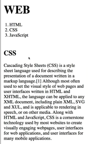
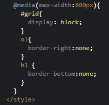

웹은 수많은 형태의 화면에서 동작해야 한다.
(컴퓨터, 스마트폰, 가상현실 등)
그래서 화면의 크기에 따라 웹페이지의 각 요소들이 반응해서
최적화된 모양으로 바뀌게 하는 반응형 디자인(반응형 웹)이 만들어졌다.
반응형 디자인을 우리가 순수한 웹을 통해서, CSS를 통해서 구현하는 핵심적인 개념인
미디어 쿼리에 대해서 살펴보겠다.
head의 style 안에
화면의 가로 크기가 800px보다 클 때:
@media(min-width:800px)
화면의 가로 크기가 800px보다 작을 때:
@media(max-width:800px)
와 같은 조건을 주고, {}안에 속성을 쓰면 된다.

위 그림과 같은 웹페이지가 가로 길이가 800px 이하일 때는
아래 그림처럼 바뀌도록 만들어보겠다.
(선이 없어지고, 본문이 아래로 내려오게)
@media(max-width:800px)로 조건을 주고
① #grid{ display: block; }
→ 본문이 block level element가 되어
화면 오른쪽에 위치할 수 없게 되므로 아래로 내려온다.
② ol{ border-right:none; }
→ 세로 선이 사라진다.
③ h1 { border-bottom:none; }
→ 가로 선이 사라진다.
